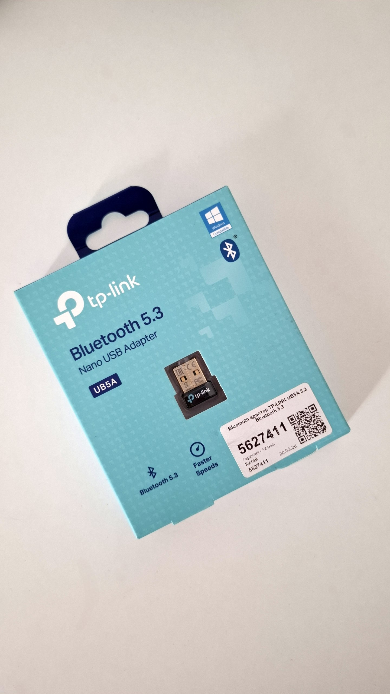

Здесь краткие характеристики всего. Подробнее о каждой - в карточках на "Главной"
Intel Core i7 2630QM @2ГГц (Sandy Bridge)
Дискретная NVIDIA GeForce GT 550M (2ГБ VRAM) и интегрированная Intel HD Graphics 3000
Одна плашка Kingston (8ГБ) и одна плашка Samsung (4ГБ) - всего 12ГБ (поддерживается апгрейд)
Быстрый SSD Hikvision на 256ГБ (SATA 3, 6ГБ/сек) (поддерживается апгрейд)
Два USB 3.0 и один USB 2.0, а также ESata + USB 2.0 (всего - четыре USB). Поддерживается SD карта. Дисковод переделан под слот для второго SSD/HDD. Также Jack 3.5 и Aux-разъемы. 1х HDMI. 1x Ethernet.
Зарядный разъём полностью исправен. Батарея в отличном состоянии (1 час 13 минут непрерывного видео + трей - подробнее в "Экран и корпус")
В плохом состоянии. Требуют замены. В комплекте будут динамики для замены - если захотите сменить: обратитесь в любой сервис.
Яркий HD экран - 1366 на 768 пикселей (14 дюймов).
В хорошем состоянии. Есть небольшие потертости.
Вентелятор прочищен от пыли. Заменена термопаста на ЦП и видеокарте.
Активированная Windows 10 Home. Лучшая система для данного ноутбука.
Ноутбук, Зарядка (провод и блок питания), сменные динамики (требуется мастер), Bluetooth-USB адаптер, подарочная недорогая USB-мышь

Обязательно прочитайте весь сайт - это займет всего около 10 минут. В "недостатках" подробное их разъяснение, все из них можно исправить, даже не покупая новые компоненты (для тачпада и сенсорной панели надо присоединить шлейф, а динамики есть в комплекте). При визите в сервисный центр обязательно попросите сделать все эти вещи сразу (если они, конечно, вам нужны - так как данные недостатки для большинства вообще не критичны)